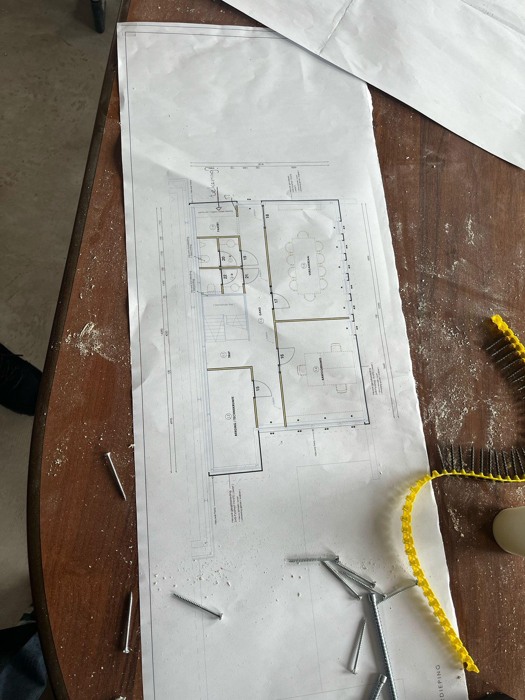
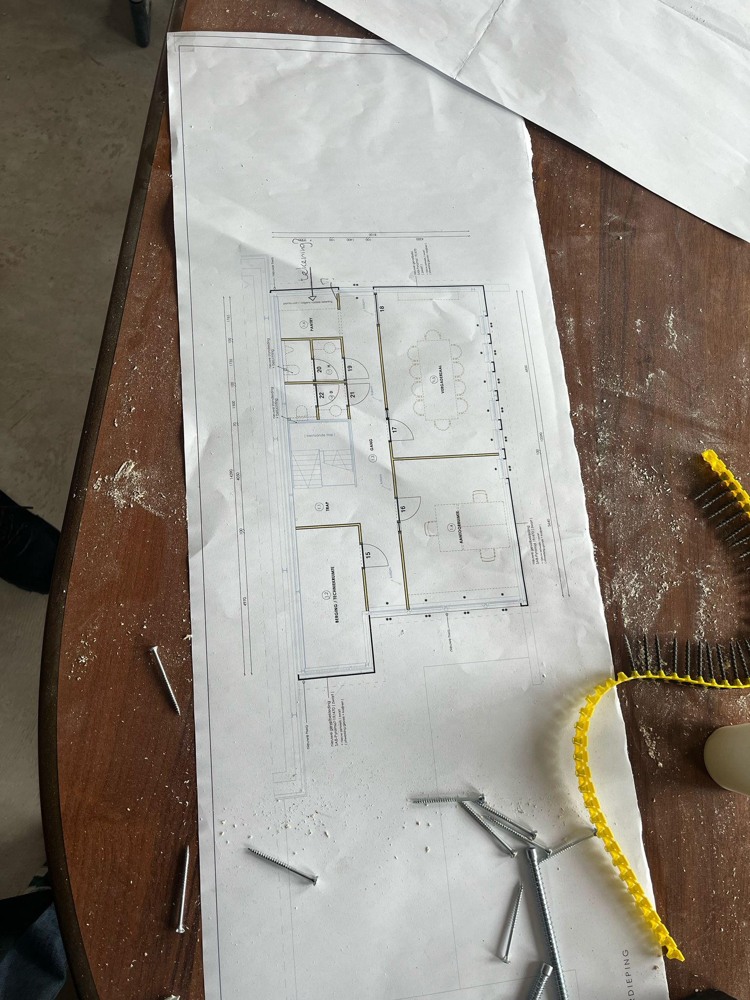

Portfolio
Jaar 1
Excursies
leeg
Bouwbeurs
Op dinsdag 4 februari zijn we met de hele studie (eerste jaars) naar de bouwbeurs gegaan, hier hebben we de odpracht gegeven om bij 10 stands een praatje te maken. deze praatjes moeten geintergreerd worden in het portfolio.
First Base
Deze stand stond ergens aan het begin van de beurs en trok onze aandacht door het machiene die er stond. De stand ging over betonloze 'heipalen' die in de grond geschoefd worden, dit zorgt voor minder overlast en kan goedkoper zijn. Een ander voordeel is dat de palen relatief makkelijk uit de grond kunnen worden gehaald. Een nadeel van deze palen is dat de over het algemeen minder gewicht kunnen dragen.


Carlisle
Deze stand trok onze aandacht door het gigantiche detail op de muur, maar ging uiteindelijk oom een soort dakbedekking/leer wat makkelijk aan te brengen is. Dit leer kon niet alleen op het dak toegepast worden maar ook op andere plekken in de constructie om water weg te houden, het detail liet zien hoe het voden een kozijn gebruikt kan worden.
Tectum
Deze stand trok onze aandacht door de erg enthousiaste man die onst graag met een VR bril over een plank wou laten lopen, dit hebben we alle vier gedaan. De stand ging verder over veiligheid voor dakbedekkers, maar daar hebben we het niet echt over gehad.


Hydrotop
Deze stand ging over een bak die in het dak gemonteerd kan worden waar dan een warmtepomp in kan, hierdoor hoeft de warmtepomp niet buiten in de tuin te staan. Een belangrijk punt van deze vak is dat hij er aan de buitenkant uit ziet als een dakraam, hierdoor is het niet hinderlijk voor de uitstraling van het huis.
Swisspearl
Deze stand ging over afwerkplaten voor de muur, het zijn platen die vervangend zijn voor zowel het OSB en de gipsplaten die vaak op HSB worden gemonteerd. Dit bespaart geld en werk waardoor een wand sneller is bekleed.

Iko
Deze stand ging over de een design center van Iko, het is een design center voor verschillende onderdelen van een gebouw. Deze designs kunnen uitgewerkt worden op detailniveau in 3D.
Comfort Bouwblok
Dit was een kleine stand ergens in een hoekje van een hal, maar wij vonden hem wel interessant. Het ging namelijk over Piepschuim blokken waar een huis mee gebouwd kan worden, deze blokken waren zo ontworpen dat ze uit zichzelf genoeg isolatie bieden. Maar een piepschuimen huis is niet stevig genoeg, daarom was het blok opgedeels in twee stukken die met plastig spacers uit elkaar werden gehouden, de gleuf die dan door de blokken gevormd word kan gevuld worden met wapening en beton waardoor het een stevig huis word.

Magnum Heating
Deze stand ging voer vloerverwerming, er waren vooral veel verschillende soorten vloerverwarming te zien. Het trok onze aandacht door de glasen vloer waar de systemen te zien waren.
Unilin
Deze stand ging over een prefab onderdelen lijn van unilin, het zijn HSB prefab onderdelen die voor zowel de gevel als het dak gebruikt kunnen worden.
Intergas
Deze stand was voor een nieuwe lijn wermtepompen van Intergas, de xtend eco lijn. Deze warmtepompen hebben een natuurlijk koelmiddel en een kleiner formaat.
Bloemenbouw
Een van de SLB opdrachten van periode 3 was het plannen van een excursie, voor deze excursie zijn we naar bloemenbouw geweest in Meppel. We hebben eerst even gekletst over het bedrijf en daarna zijn hebben we rondgelopen in hun prefab loods en bij een projectje in de buurt. Bloemenbouw is een bouwbedrijf wat vooral werkt met eigen prefab onderdelen, hiervoor hebben ze een loods in meppel waar ze de onderdelen kunnen maken. Ze werken vooral aan kleinere projecten, maar hebben meestal 2 of 3 grotere projecten waar ze aan werken.

 

Jong Architecten
Een andere SLB opdracht was een stagebezoek bij een stagair die op dat moment stage liep.
Ik ben samen met Tijs op bezoek geweest bij Evelien die stage liep bij Jong Architecten in Balk,
ze had een van haar eerste opdrachten gepakt zodat wij er ook over na konden denken.
Het architecten bureau het klein kantoortje in het centrum van Balk met een hele leuke en natuurlijke sfeer.
Na de opdracht was het bijna lunchtijd en we hebben gezellig meegegeten met het hele kantoor, daarna nog een stukje gewandeld en toen gingen we weer naar huis.
De opdracht waar we over na konden denken was het ontwerpen van een woonhuis,
we kregen alles wat een gewone architect ook krijgt en daar hebben we onze ideën op los gelaten.
Uiteindelijk hebben we het laten 'beoordeeld' door Evelien en een van de architecten en ze waren beide onder de indruk door onze relatief goede ideën.
Evelien vroeg ons tijdens het kletsmomentje ook nog wat wij vonden van een bepaald huis langs de route, maar die hadden we de heenrijs niet opgemerkt.
Dus hier staat mijn mening:
Er waren 2 huizen die binnen de omschrijving pasden, een vond ik wel mooi maar de ander zag er niet uit.